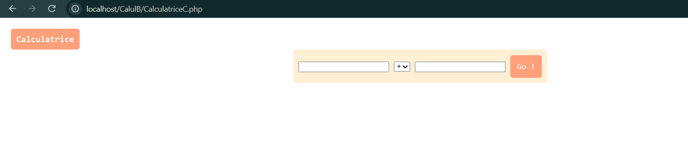
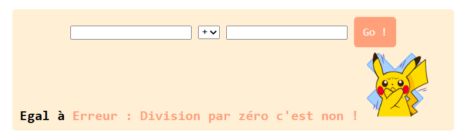

Calculatrice Web Dynamique (PHP, HTML5, CSS3)
Conception et implémentation d'une calculatrice web en PHP avec transmission par formulaire HTTP POST, gestion des opérations arithmétiques via structure conditionnelle switch, traitement des exceptions (division par zéro) et design responsive en CSS personnalisé.
Ce projet réalisé en première année de BTS SIO a pour but d'assimiler les fondamentaux de la communication client-serveur en environnement web dynamique : la saisie de données utilisateur via un formulaire HTML, leur transmission sécurisée vers le serveur applicatif PHP et le retour dynamique du résultat calculé dans la page.

-
1Traitement des 4 opérations arithmétiques fondamentales : Addition (+), Soustraction (-), Multiplication (x) et Division (/).
-
2Gestion des nombres décimaux : Prise en charge des valeurs à virgule flottante via l'attribut
step="any"et le cast(float). -
3Sécurisation et contrôle des exceptions : Détection et interception des divisions par zéro pour empêcher les erreurs d'exécution serveur.
Le formulaire interactif est intégré dans la page CalculatriceC.php. Il utilise la méthode POST pour transmettre les valeurs au serveur de manière discrète sans encombrer la chaîne de requête (URL) :
type="number"etstep="any": Validation native côté navigateur pour obliger la saisie numérique entière ou décimale.required: Empêche la soumission du formulaire lorsque l'un des opérandes est vide.name="operateur": Transmet la clé textuelle de l'opérateur arithmétique sélectionné dans la liste déroulante.
Le script PHP réceptionne les paramètres superglobaux $_POST et exécute les calculs de façon structurée grâce à l'instruction conditionnelle switch :

L'habillage graphique a été pensé pour offrir une interface utilisateur chaleureuse et lisible, avec la police monospace Consolas inspirée des afficheurs digitaux :
- Palette chromatique : Teintes pastel
PapayaWhip(#FFEFD5) pour le conteneur principal,LightSalmon(#FFA07A) pour le titre et le bouton d'action, etTomato(#FF6347) pour l'effet de survol. - Transitions fluides :
transition: background-color 0.3s easepour animer en douceur l'interaction de clic et de survol. - Coins arrondis : Utilisation de
border-radiuspour adoucir les angles des champs et des conteneurs.
$_POST et structuration logique avec switch.Vous pouvez feuilleter directement le dossier explicatif du projet ci-dessous ou le télécharger au format PDF.